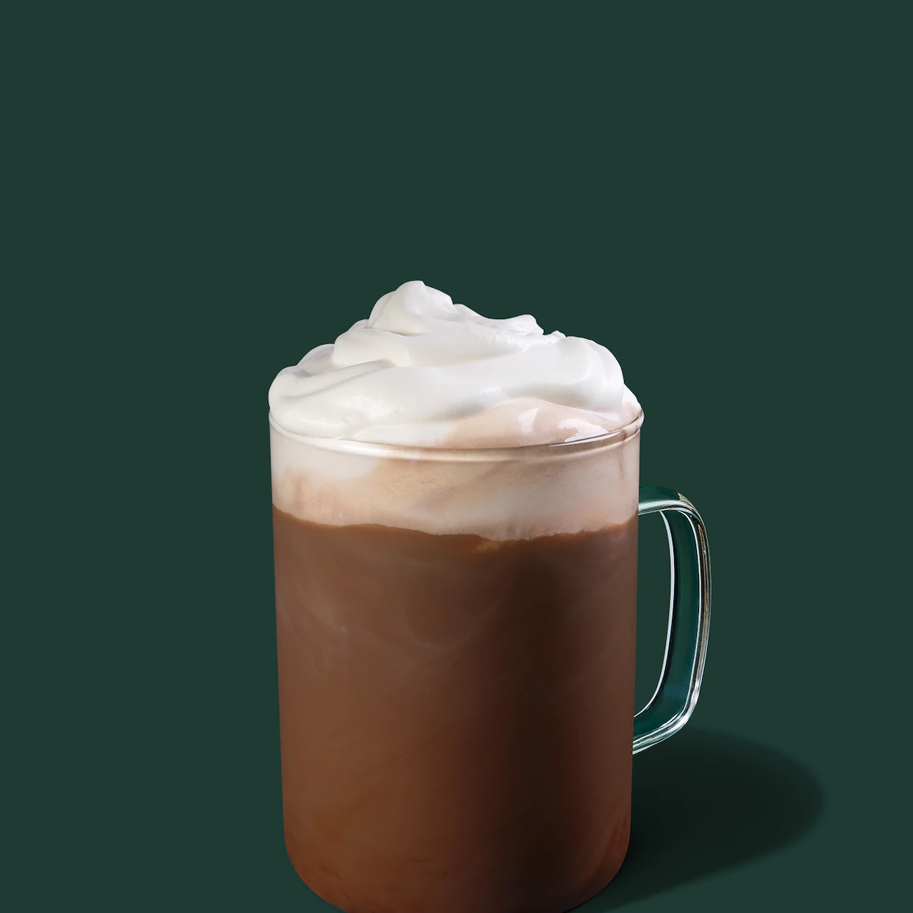

Black
Cappuccino

Mocha

Latte

Espresso
Americano
Coffee is a hot drink made from the roasted and ground seeds (coffee beans) of a tropical shrub.
Black coffee is as simple as it gets with ground coffee beans steeped in hot water, served warm. And if you want to sound fancy, you can call black coffee by its proper name: cafe noir.
Cappuccino is a latte made with more foam than steamed milk, often with a sprinkle of cocoa powder or cinnamon on top. Sometimes you can find variations that use cream instead of milk or ones that throw in flavor shot, as well.
For all you chocolate lovers out there, you’ll fall in love with a mocha (or maybe you already have). The mocha is a chocolate espresso drink with steamed milk and foam.
As the most popular coffee drink out there, the latte is comprised of a shot of espresso and steamed milk with just a touch of foam. It can be ordered plain or with a flavor shot of anything from vanilla to pumpkin spice.
An espresso shot can be served solo or used as the foundation of most coffee drinks, like lattes and macchiatos.
With a similar flavor to black coffee, the americano consists of an espresso shot diluted in hot water. Pro tip: if you’re making your own, pour the espresso first, then add the hot water.

Iced Coffee
Affogato

Cold Brew Coffee

Frappuccino
Nitro

Iced Espresso
A coffee with ice, typically served with a dash of milk, cream or sweetener—iced coffee is really as simple as that.
The affogato is an excuse to enjoy a scoop of ice cream any time of day (and any time of year in my opinion). Served with a scoop of ice cream and a shot of espresso, or two. The affogato is extra delish served over a brownie.
The trendiest of the iced coffee bunch, cold brew coffees are made by steeping coffee beans from anywhere between 6-36 hours, depending on how strong you would like your cold brew. Once the beans are done steeping, add cold milk or cream.
Made famous by Starbucks, the Frappuccino is a blended iced coffee drink that’s topped with whipped cream and syrup.
A cold brew + nitrogen bubbles = a cold brew coffee with a frothy, Guinness-like consistency.
Like an iced coffee, iced espresso can be served straight or with a dash of milk, cream or sweetener. You can also ice speciality espresso-based drinks like americanos, mochas, macchiatos, lattes and flat whites.